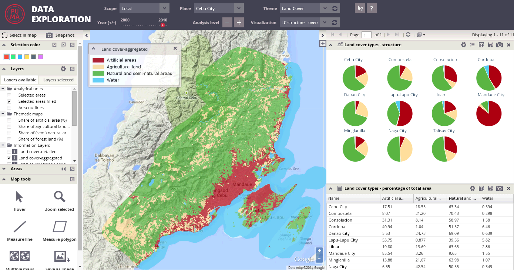

Visualizations are predefined thematic compositions of the map layout and chart panel display.
Each visualization is characterized by its own predefined set of thematic maps and charts with predefined order, indicators and settings.

Each visualization incorporates the following elements:
- predefined map composition, including legend
- predefined composition of charts and tables
- predefined set of thematic layers (which could be temporarily switched on or off by the user)
- predefined set of available informational layers
All components are relevant for the topic that is the subject of the particular visualization. These components have been composed together based on expert knowledge of land cover and change analysis.
You can temporarily modify predefined visualizations using tools for map or chart panel modification; however, after the application (or visualization) is reloaded, the visualization settings are restored to default.